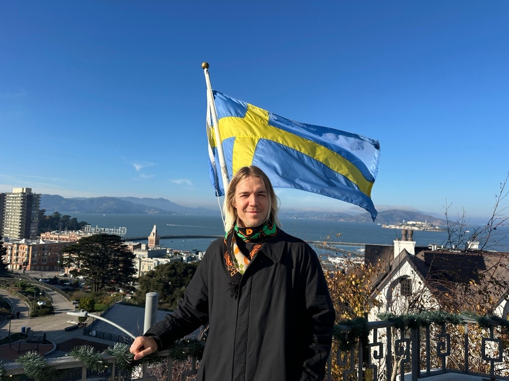

Misc.
I grew up in a small place in southern Sweden. Skateboarding and video games used to be my life. Somehow, I got into powerlifting and did way too much of that for a while. Nowadays, I mostly enjoy discovering “honest” neighborhood restaurants and new corners of subculture and music. Apparently, I like black metal and rap music for people half my age. I drink way too much coffee. It must be dark roast.
